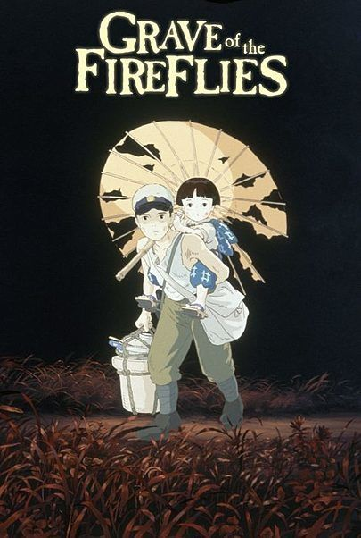
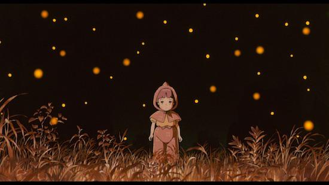
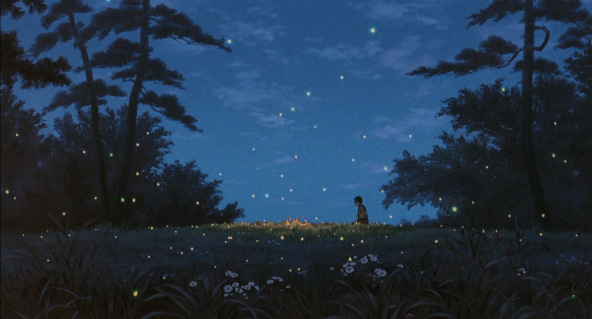
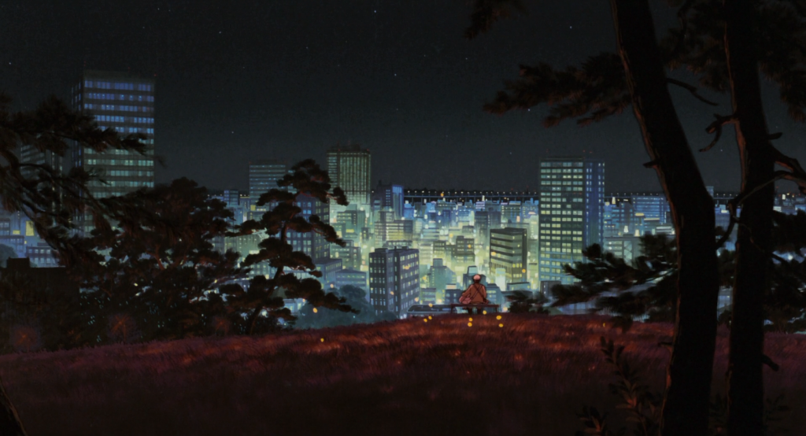
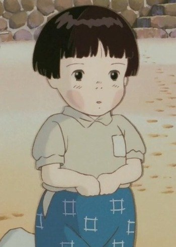
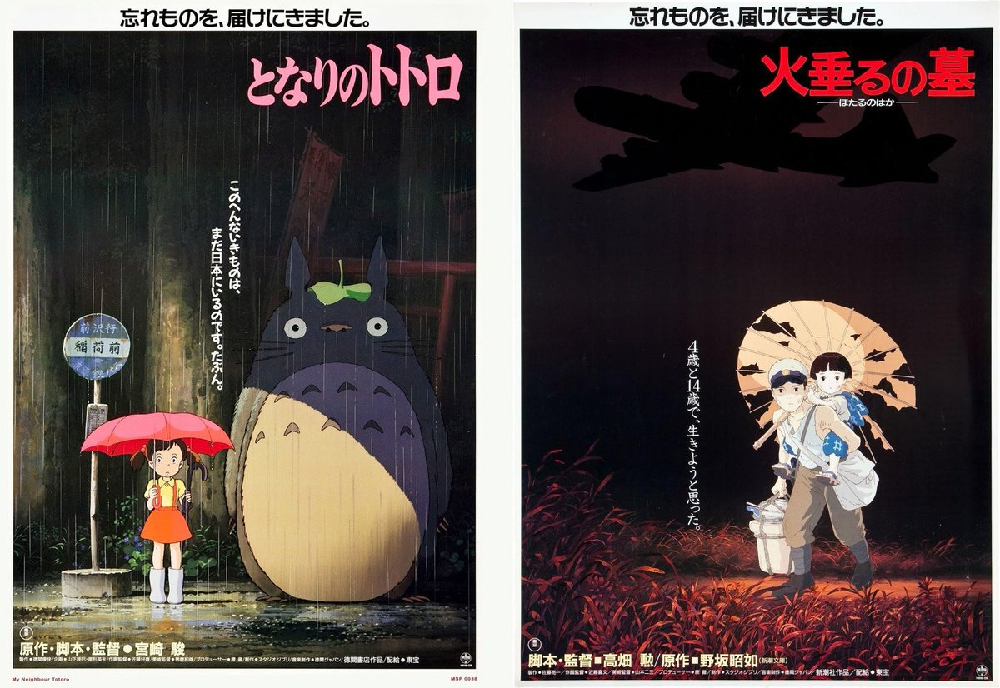
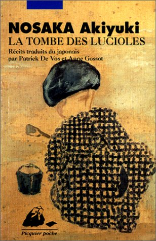

A fanpage for the 89 minute Studio Ghibli film, Grave of the Fireflies
Directed by Isao Takahata and produced by Studio Ghibli, the hit anti-war 1988 animated film Grave of the Fireflies (Hotaru no Haka) covers the life of siblings Seita and Setsuko Yokokawa as they attempt to survive through the final months of World War II. The film begins with a view of modern day Sannomiya Station, Kōbe, Hyōgo Prefecture, later fading into view of the past, where Seita lays on the station floor, in near death from starvation and malnutration. A janitor of the station encounters Seita and his posessions, throwing out a candy box, which contained Seita's sister, Setsuko's ashes. As the ashes are let out, so is the spirit of Setsuko, the fireflies, and the spirit of Seita as he soon dies.
Once again, the story is taken back to the past, around the end of World War II, where Setsuko and Seita's house is destroyed from a bombing, as well as his mother. As their father is far away, Seita and his sister are sent to live with their aunt, a seemingly peaceful time for a few days until tensions grew and rations became scarce, causing Seita and Setsuko to have to leave the house. But before they left, supplies from Seita's house and mother were given to the aunt, except a small tin of fruit drops, which Seita kept (the same tin which later contains his sister's ashes), and soon the aunt even asked the siblings to sell the last of their mothers kimonos and items for money, but the siblings instead decide to take their mother's supplies and clothes and leave the house, taking refuge in an abandoned shelter. However, the supplies did not last them long, and soon they both suffered from malnutration. Setsuko, Seita's sister starves from the lack of food, even told by a doctor that she has severe malnutration. News of the siblings father's death spreads, and money is given, but even that lasts little. Starvation still spreads, and soon, from the need for food, Seita's sister starts hallucinating, mistaking rocks for food, and mud for rice balls, even offering them to her brother. Seita is heartbroken by the actions, and attempts to cook and find food, however, by the time he was back, Setsuko has already died.
Seita had to cremate his little sister's body himself, and a scene is shown of the fire from cremation. The sight of fireflies are seen, surrounding the area of cremation. Seita then placed his little sister's ashes in the now empty fruit drops tin, where his father's photograph also remained. Survival seemed bleak, and Seita ends up dying from malnutration as well at the Sannomiya Station. The scene is cut back to the present day, as the siblings are seen peacefully together, with fireflies in the sky, as the watch the modern city view.
|  |  |  |
"Why do Fireflies have to die so soon" - Setsuko
The fireflies are thought to symbolize many things in the movie. The kanji in the Japanese title provide symbolism by evoking images of fireflies as droplets of fire, symbolizing not only the bombs but the fragility of life as that fire will drop and die. Fireflies also die early in thier youth as they have a short lifespan, and Setsuko is seen with the fireflies after she dies, demonstrating her short lifespan and the lifespan of the children during the war, short and fleeting.
| Unlike the usual black lineart used for animations, many of the illustrations in Grave of the Fireflies used brown in order to provide a softer feel to the film. | Lineart |  |
|---|---|---|
| Considered a double feature with Studio Ghibli Film My Neighbor Totoro. | Double Feature |  |
| Film based on the same title book by Akiyuki Nosaka in 1967. | Book |  |
Email: abcd123@email.com
Phone: xxx-xxx-xxxx